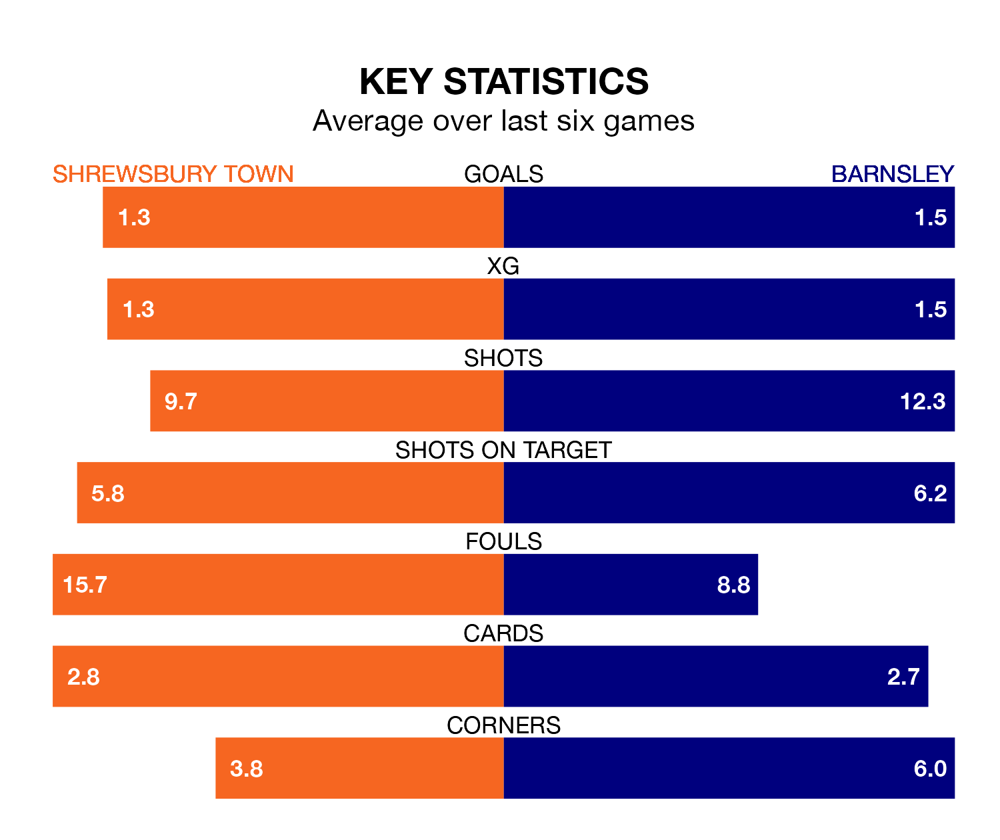

Barnsley travel to Shrewsbury Town on late Tuesday in EFL League One.
The visitors come into the game on the back of a win in their last match, having beaten Leyton Orient 2-1 at home, with goals from Adam Phillips.
The Shrews, meanwhile, drew their last match, 1-1 against Derby County, with their goal scored by Aaron Pierre.
With 22 goals in 31 games so far this season, Shrewsbury are the league's joint-second-lowest scorers with 0.7 goals per game. And they are conceding more than average, letting in 42 goals at a rate of 1.4 per game.
Barnsley, meanwhile, are above average scorers, with 1.8 goals per game, compared to a league average of 1.3. They have conceded 1.1 goals per game.
In Devante Cole, the Tykes have the league's sharpest shooter so far this season. He has notched 17 goals in 30 appearances.
His goal rate of one every 146 minutes is much quicker than that of Daniel Udoh, Town's top scorer with a goal every 442 minutes, and a total of five goals in 27 games.
In the last 10 years, Shrewsbury and Barnsley have played each other on seven occasions. Shrewsbury won two of them and Barnsley five.
On average, the Shrews scored 1.0 goal and the Tykes 1.9 in those matches.
Their last meeting was on October 24, when Barnsley won 3-0 at home.
The visitors are fourth in the table after 30 games, of which they have won 16 and drawn eight, earning 56 points.
The Shrews are 15 places behind Barnsley in 19th, with 10 wins and four draws putting them on 34 points.
The home team are in mixed form in EFL League One, with two wins and a draw from their last six games.
With four wins and a draw over that period, Barnsley's form is much better – they have taken 13 points from 18, compared to Shrewsbury's seven.
Tuesday's match will be refereed by Thomas Parsons, who has taken charge of four EFL League One games so far this season, issuing one red card and booking 17 players. He has not awarded any penalties.
The last Barnsley game Parsons refereed was the 4-0 win away at Cambridge United on October 3. He is yet to oversee a match featuring Shrewsbury this season.
Updated: 09:02 (UTC), 13/02/24